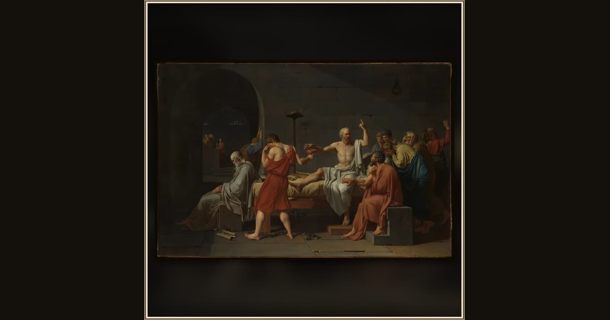

The Death of Socrates
Jacques Louis David · 1787 · met
Socrates reaches for a cup of poison held out by an attendant, while his friends gather around his couch; he receives it calmly in this passage. (117b) Explore its place in Plato's Dialogues, Phaedo, section 299.